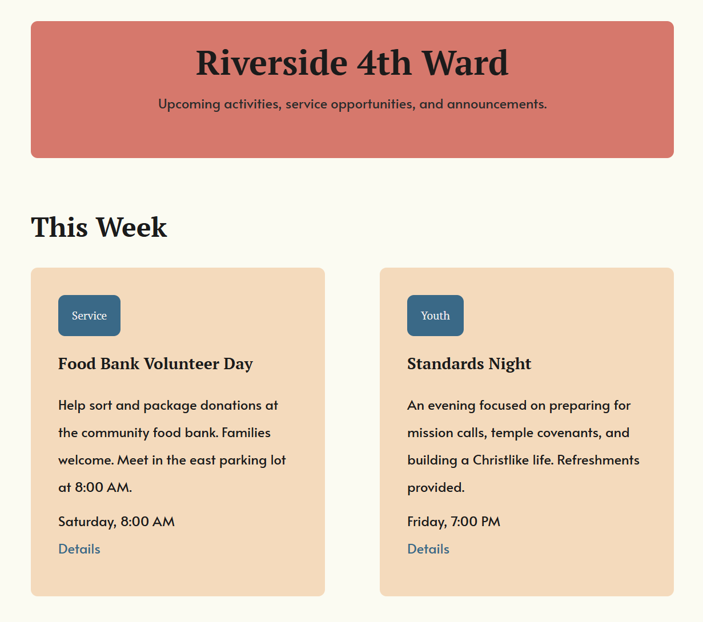
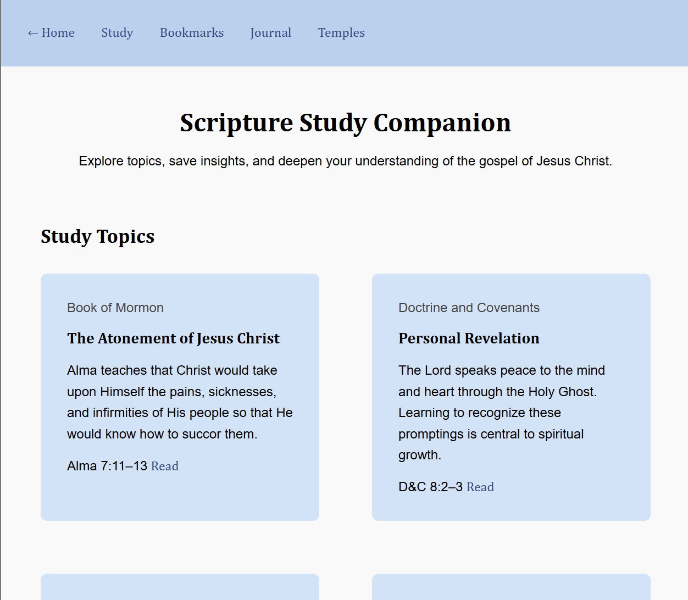
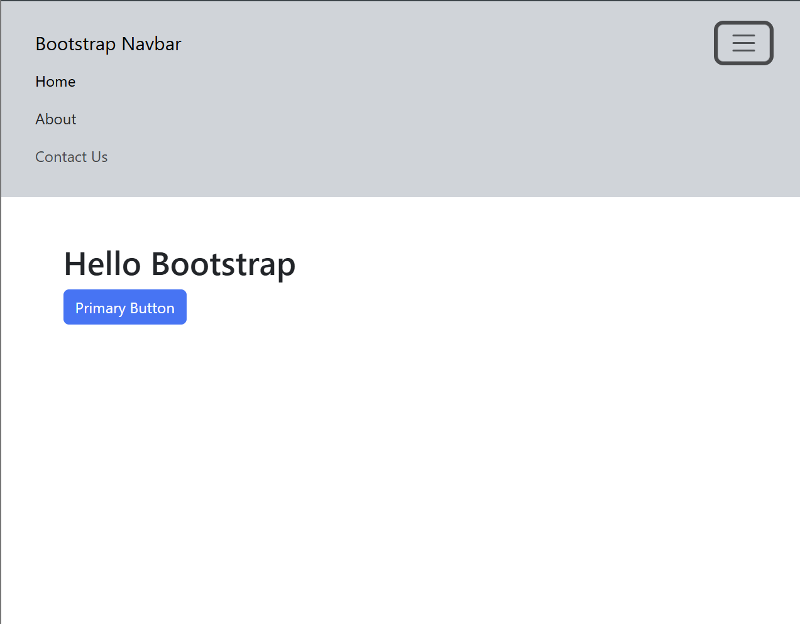
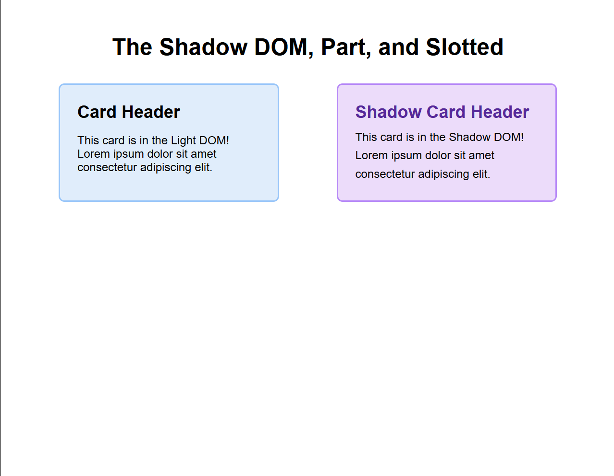

Custom Properties and Nesting
Use modern CSS features like custom properties, math functions, and native nesting to style a web page.
Hello! I'm Emma, a student at BYU-I. I'm currently majoring in Web Design and Development. Welcome to my portfolio! This is a showcase of my work for the Advanced CSS class and hopefully I can use it for more projects in the future.

Use modern CSS features like custom properties, math functions, and native nesting to style a web page.

Use @layer and @import to create layers of specificity and control what styles should override each other.

Week 03 teaching activity: demonstrate what the Bootstrap framework does and what it's used for.

Week 04 teaching activity: create a custom component, attach a shadow tree, and use ::part() and ::slotted() to allow component styles inside the Shadow DOM to be changed or change the style of an outer element being passed in.